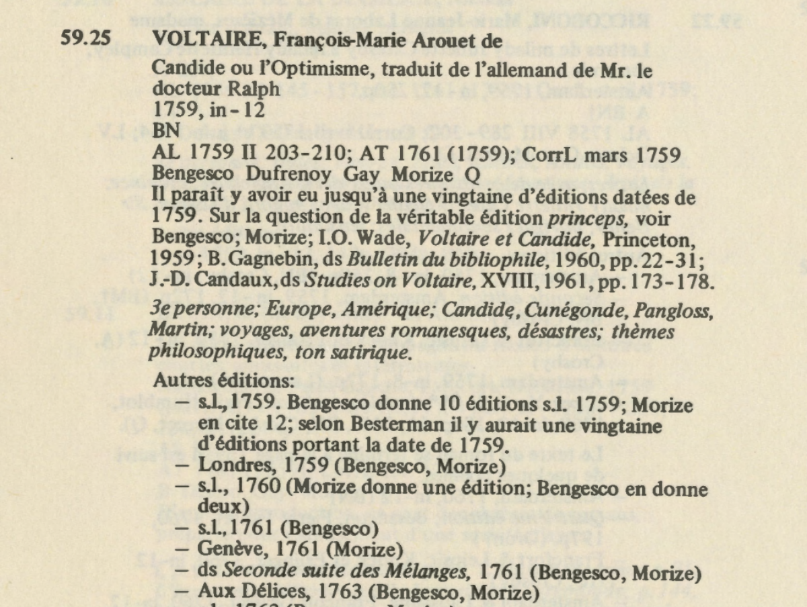
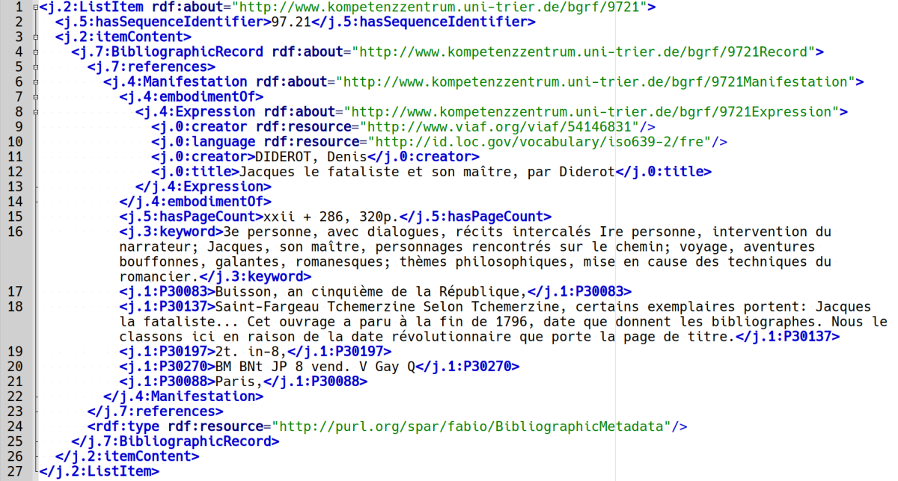

# Mining and Modeling Text: Informationsextraktion und LOD für die Literaturgeschichtsschreibung <img height="60" data-src="img/basics/mimotext-logo.png"> <br/> <hr/> <p>Christof Schöch & Maria Hinzmann, mit Beiträgen von Julia Röttgermann, Katharina Dietz und Anne Klee</p> <p><a href="https://mimotext.github.io/zurich2020">https://mimotext.github.io/zurich2020</a></p> <p><strong><emph>Informationen – digital verpackt</emph> | ZB Zürich | 23.9.2020</strong></p> <hr/> <img height="50" data-src="img/basics/tcdh-slim.png"> <img height="50" data-src="img/basics/uni-trier.png"> <img height="50" data-src="img/basics/mwrlp.svg"> :: - Begrüßung, freuen uns auf live-Diskussion - Bericht aus laufendem Projekt am TCDH der Universität Trier - Kollaboratives Projekt mit Beiträgen aus CL, Informatik, DH und LitWiss - work in progress: alles in ständiger Bewegung - Gefördert durch die Forschungsinitiative Rheinland-Pfalz -- ## Gliederung 1. [Einführung in 'Mining and Modeling Text'](#/2) 2. [Mining - Extraktion und Analyse von Informationen](#/3) 3. [Modeling - Repräsentation und Verknüpfung von Informationen](#/4) 4. [Fazit - retrospektiv und prospektiv](#/5) :: - Kurzer Überblick über das Projekt - Mining: Wie ermitteln wir Informationen aus Text? - Modeling: Repräsentation als Voraussetung für Vernetzung - Weitergehende Motivation: erproben hier an älterer Literatur; Wünsche für die Zukunft des wiss. Publizierens. -- ## (1) Einführung in <br/>'Mining and Modeling Text' --- ### MiMoText: Überblick <a href="img/mimotext-overview.png"><img height="450" data-src="img/mimotext-overview.png"></a> <br/><a href="https://mimotext.uni-trier.de">https://mimotext.uni-trier.de</a> :: - Gegenstand: französischer Roman des 18. Jahrhunderts - Drei Informationsquellen: - (A) Metadaten aus Nachweissystemen (Bibliographie du genre romanesque français); - (B) Sachinformationen aus Fachliteratur (Literaturgeschichten); - (C) Texteigenschaften aus Primärtexten (Volltexte der Romane) - Ziel: Informationen extrahieren, als LOD modellieren und zusammenführen - Eine Art Wikidata für die Literaturgeschichte --- ### Was sind (literaturhistorisch) relevante Informationen? * Nachweissysteme <!-- .element: class="fragment" data-fragment-index="1" --> * Metadaten: Autoren, Werke, Verlage, etc. * Keywords in der *Bibliographie...*: Setting, Themen, Protagonisten <br/><br/> * Fachliteratur <!-- .element: class="fragment" data-fragment-index="2" --> * Handlung, Inhalte, Themen * Wertungen von Autor:innen und Werken * Beziehungen zwischen Autor:innen und Werken <br/><br/> * Primärtexte <!-- .element: class="fragment" data-fragment-index="3" --> * Handlungsorte * Figurennamen * Topics * Anteil direkter Rede * uvm. :: - Bezogen auf die drei Säulen des Projekts - Austausch mit / Diskussion in fachwissenschaftlicher Community (Relevanzdiskussion etc.) - Am Ende: Beziehungen - Handlungsorte = Setting - Figurennamen = Protagonisten - Topics = Themen -- ## (2) Mining - <br/>Extraktion und Analyse von Informationen --- #### Bibliographie du genre romanesque français (BGRF) <a href="img/bgrf-Candide.png"></img></a> :: - Ein Eintrag unter rund 2500: Voltaires Candide --- #### Bibliographie modelliert als RDF <a href="img/bgrf-Diderot-RDF.png"></img></a> :: - Eintrag hier nun in modellierter Form (Andreas Lüschow) - Alles natürlich automatisch: Machine Learning - Explizite Zuordnung jeder Information zu einem Konzept in einer Ontologie - Hier im RDF-Format - Bibliographie ist Referenzpunkt für das Projekt - An Werke und Autoren werden nun weitere Informationen angehängt - Informationen können auch zum Abgleich mit anderen Verfahren dienen --- #### Beispiel Primärliteratur (Romane) * Pilotkorpus: 80 französische Romane (1750-1800) <!-- .element: class="fragment" data-fragment-index="1" --> * Kodierung: in XML-TEI, mit Metadaten, nach ELTeC-Schema <!-- .element: class="fragment" data-fragment-index="2" --> * Analyse: Topic Modeling zur Identifikation von Themen <!-- .element: class="fragment" data-fragment-index="3" --> --- #### Topic Modeling - Erste Ergebnisse (C) <a href="img/pilot_mod200_fr_10_500_expStop.html"><img height="500" src="img/pyldavis.png"></img></a> :: - Einige Topics: Familie, Philosophie, Liebe, Monarchie, Sexualität, Lesen/Schreiben, Tod, etc. - Festhalten, welche der Topics jeweils in bestimmten Romanen am wichtigsten sind - Beispielsweise: In Candide hat das Topic "philsosphy" die Wahrscheinlichkeit 0.34 (zweit-wichtigster Topic) - Überleitung: Das muss jetzt aber auch "passend" zu den übrigen Informationen modelliert werden -- ## (3) Modellierung - Repräsentation und Verknüpfung von Informationen --- ### Modellierung als Linked Open Data (LOD) * Linked Open Data <!-- .element: class="fragment" data-fragment-index="1" --> * Große Menge einfacher Aussagen * Subjekt, Prädikat, Objekt (Triples) * Beispiel Topic Modeling <!-- .element: class="fragment" data-fragment-index="2" --> * Subjekt: *Candide* * Prädikat: MAIN_SUBJECT (= Wikidata P921, DC subject) * Objekt: Topic "philosophy" * LOD-Statement <!-- .element: class="fragment" data-fragment-index="3" --> * Candide MAIN_SUBJECT 'philosophy' :: - Ende: Solche Aussagen gehen dann in den LOD-Bestand ein; Wissensnetzwerk --- #### Extraktion aus Literaturgeschichtsschreibung >Candide ist das meistgelesene Werk Voltaires und war es wohl schon zu Lebzeiten des Autors. Als es 1759 in Genf erstmals im Druck erschien, wurde es zwar sofort verboten, aber doch nur mit dem Ergebnis, daß es im gleichen Jahr noch dreizehn Neuauflagen erlebte. (Erich Köhler, Aufklärung II, 1984) :: - ... --- #### Aussagen (1) * Voltaire (Q9068) AUTHOR_OF Candide (Q215894) <!-- .element: class="fragment" data-fragment-index="1" --> * Candide PUBLICATION_DATE 1759 <!-- .element: class="fragment" data-fragment-index="2" --> * Candide PUBLICATION_LOCATION Geneva (tgn:7007279) <!-- .element: class="fragment" data-fragment-index="3" --> :: - = Einfache bibliographische Metadaten - Identifier: kommen aus Wikidata; lasse ich im Folgenden weg --- #### Aussagen (2) * Candide GENRE novel; satire; utopia <!-- .element: class="fragment" data-fragment-index="1" --> * Candide LEGAL_STATUS censored <!-- .element: class="fragment" data-fragment-index="2" --> * Candide RECEPTION_INTENSITY high <!-- .element: class="fragment" data-fragment-index="3" --> * <!-- .element: class="fragment" data-fragment-index="4" --> Candide MAIN_SUBJECT "philosophie" :: - letzte Aussage: kommt aus der Topic Modeling-Analyse - Modellierungsfragen: - -- RECEPTION_INTENSITY oder REPRINT_COUNT? - -- MAIN_SUBJECT, Topic: halten wir den Rang oder die Wahrscheinlichkeit fest? --- #### Besondere Aussagetypen * {Voltaire AUTHOR_OF Candide} SOURCE Köhler_1984 <!-- .element: class="fragment" data-fragment-index="1" --> * {Candide LEGAL_STATUS censored} TEMPORAL_SCOPE 1759-1765 <!-- .element: class="fragment" data-fragment-index="2" --> * Köhler_1984 MAIN_SUBJECT Voltaire; Candide; Geneva <!-- .element: class="fragment" data-fragment-index="3" --> :: - [Source, Qualifier, Implicit: hier noch übersetzen?] - [WIP: Evtl. als Bonusfolie? - [WIP: ggf. hier exemplarisch 'thematische Statements'?! -> Vergleich verschiedener Datensätze (BNF, DBPedia, Wikidata) -> Was liefern die jeweils für Infos zur Frage: Welche 'THemen' verhandelt Candide?] --- #### Informationsnetzwerk <a href="img/network-of-information.png"><img height="500" src="img/network-of-information.png"></img></a> :: - Kleiner Ausschnitt - Abgleich zwischen Bibliographie und Topic Modeling: Themen, Handlungsorte -- ## (4) Fazit: retrospektiv und prospektiv :: - (1) Retrospektiv - die Perspektive des ganzen Projekts, weil wir ja "retrodigitalisieren" - Und weil wir Literaturgeschichtsschreibung betreiben - (2) Prospektiv - wie sollten Publikationen gestaltet sein, damit sie leichter "als Daten" ausgewertet werden können? --- ### Literaturgeschichtsschreibung (retrospektiv) * Unser Ziel: "Wikidata für die Literaturgeschichte" <!-- .element: class="fragment" data-fragment-index="1" --> * literaturhistorisches Informationssystem * LOD-Basis, SPARQL-Endpoint, Suchmaske * Aber mit: <!-- .element: class="fragment" data-fragment-index="2" --> * viel spezifischerem Fokus (Romanliteratur 1750-1800) * stark erweiterter Abdeckung (Autoren, Werke) * stark erhöhter Aussagendichte * systematischer Ontologie von Aussagentypen * vielfältigen Anwendungsszenarien für die Literaturgeschichte --- ### Publikationen als Daten (prospektiv) * Digital und Open Access <!-- .element: class="fragment" data-fragment-index="1" --> * Publikationen als (maschinenlesbare) Daten <!-- .element: class="fragment" data-fragment-index="2" --> * Reichhaltige Metadaten <!-- .element: class="fragment" data-fragment-index="3" --> * Explizite, semantisch kodierte Textstruktur <!-- .element: class="fragment" data-fragment-index="4" --> * Auszeichnung un Identifikation von Entitäten (Normdaten) <!-- .element: class="fragment" data-fragment-index="5" --> * Kernaussagen als LOD-Statements <!-- .element: class="fragment" data-fragment-index="6" --> * Alles in offenen Standardformaten <!-- .element: class="fragment" data-fragment-index="7" --> :: - Im Projekt alles extrem aufwändig - Überführung von unstrukturiertem Text in maschinenlesbare Daten - Motivation für Änderungen im Publikationswesen - Im Grunde sind das alles Anforderungen an das zukünftige, wissenschaftliche Publikationssystem - Dafür brauchen wir auch wissenschaftsadäquate Software, insbesondere Schreibsoftware - Software, die bspw. dabei unterstützt, Entitäten auszuzeichnen - Aber auch ein Verständnis dafür bei den Kolleg:innen, dass das sinnvoll ist - Wir hoffen, heute hierzu etwas beigetragen zu haben --- ## Vielen Dank!<br/><br/>Fragen oder Kommentare? <br/><br/> <br/><br/> <hr/> <small> <br/>Folien: <a href="https://mimotext.github.io/zurich2020">https://mimotext.github.io/zurich2020</a> <br/>Projekt: <a href="https://mimotext.uni-trier.de">https://mimotext.uni-trier.de</a> <br/>Lizenz: <a href="https://creativecommons.org/licenses/by/4.0/">Creative Commons Attribution (CC BY)</a>, 2020 </small> <hr/> -- ## Bonus-Folien --- #### Wikidata query <a href="https://query.wikidata.org/#SELECT%20DISTINCT%20%3Fbook%20%3FbookLabel%0AWHERE%20%7B%0A%20%20%3Fbook%20wdt%3AP31%20wd%3AQ7725634%20%3B%20%20%23%20books%20that%20are%20literary%20works%0A%20%20%20%20%20%20%20%20wdt%3AP407%20wd%3AQ150%20%3B%20%20%20%20%20%20%23%20books%20written%20in%20French%0A%20%20%20%20%20%20%20%20wdt%3AP921%20wd%3AQ5891%3B%20%23main%20subject%3A%20philosophy%20%0A%20%20SERVICE%20wikibase%3Alabel%20%7B%0A%20%20%20%20bd%3AserviceParam%20wikibase%3Alanguage%20%22%5BAUTO_LANGUAGE%5D%2Cfr%22%20.%0A%20%20%7D%0A%7D%20%0A"><img height="500" src="img/wikidata-query.png"></img></a> :: [WIP: noch austauschen über mögliche Anpassungen der Bonus-Folien; gerade bei relativ großzügigem Diskussionszeitraum?!] --- #### Romananalyse: Topic Modeling <a href="img/tm_blei.png"><img height="500" src="img/tm_blei.png"></img></a>